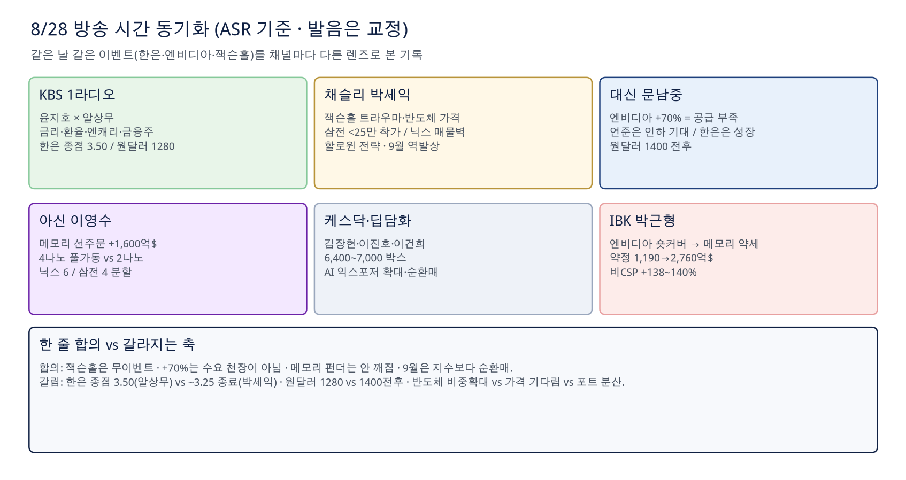
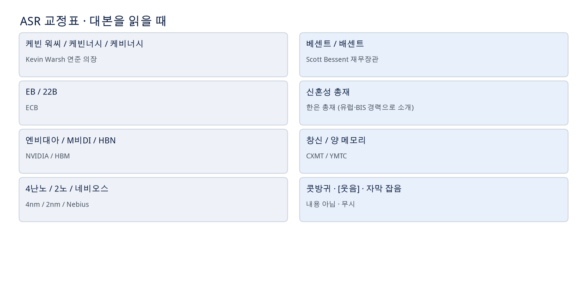
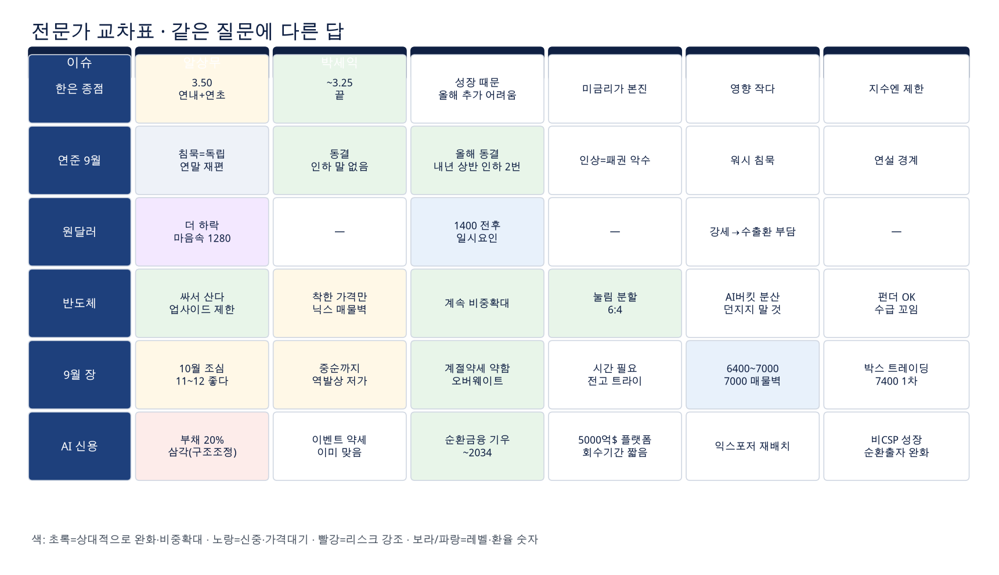
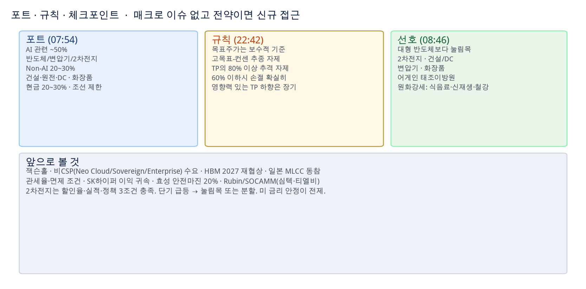
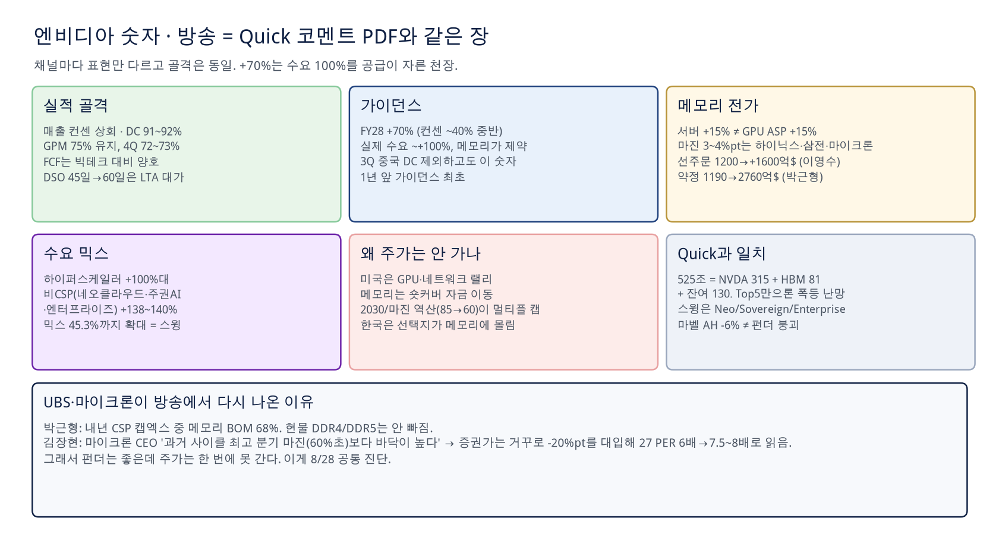
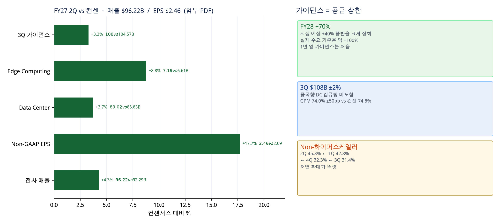
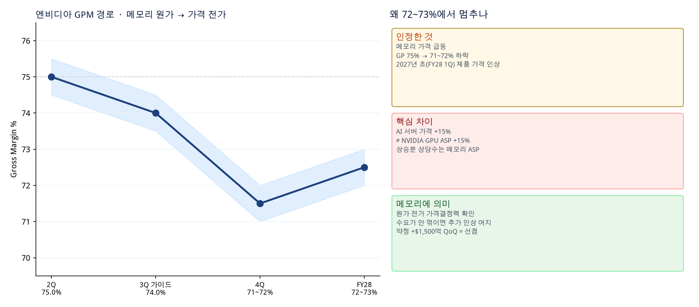
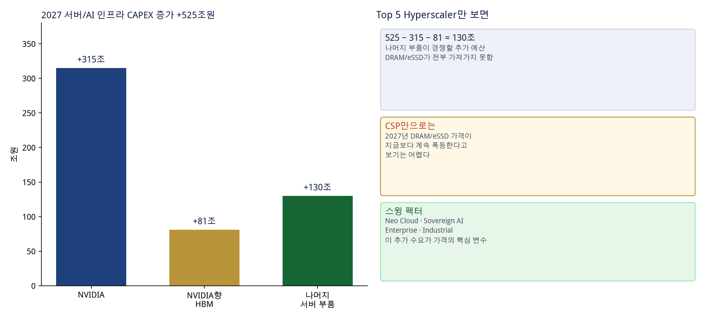
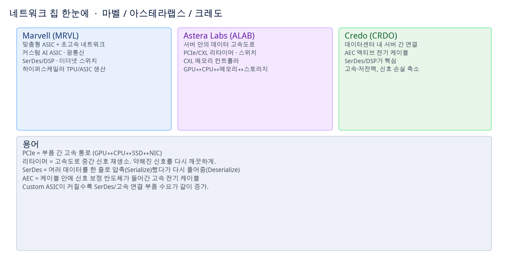
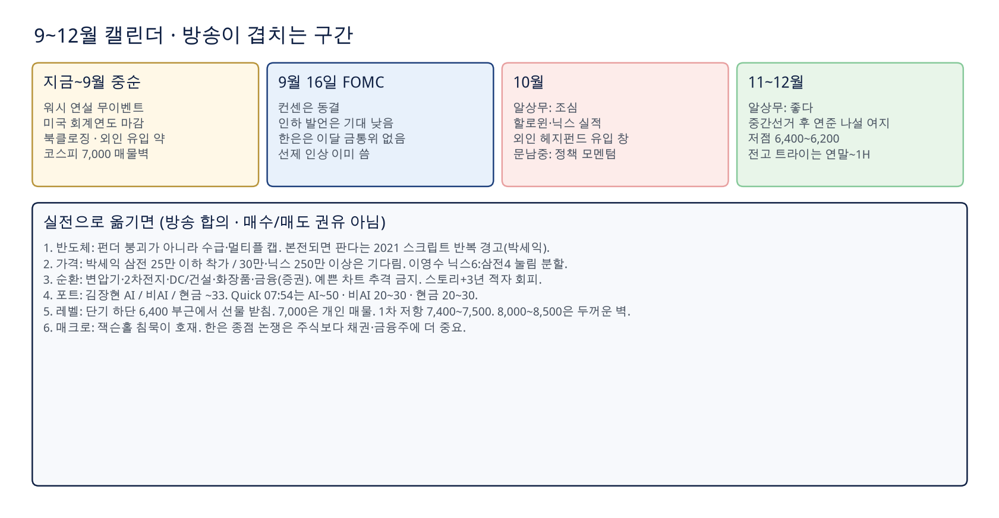

8월 28일 방송 코멘트 · 매수·매도 권유 아님 · 참고용
잭슨홀은 말이 없고, 메모리는 숫자가 있다
8/28 KBS·채슬리·대신·아신·케스닥·IBK를 타임코드로 묶고 Quick 코멘트 PDF와 겹쳤습니다.
ASR 오인식은 교정해 읽었습니다. 투자 판단은 본인 것입니다. 매수·매도 권유가 아닙니다.
합의워시 = 침묵침묵이 독립성
엔비디아+70% = 공급천장수요는 ~+100%
한은 종점3.50 vs 3.25방송이 갈라진 축
원달러1280 vs 1400알상무 vs 문남중
한 줄
같은 날 같은 실적인데 미국은 GPU·네트워크가 올랐고 한국 메모리는 못 갔습니다.
펀더가 깨진 게 아니라
숏커버 자금 이동 + 2030 마진 역산 + 7,000 개인 매물벽입니다.
+70%는 수요 상한이 아니라 메모리 공급 천장입니다. 비CSP(네오클라우드·주권AI·엔터프라이즈)가 스윙입니다.
9월은 지수 폭등보다
순환매·박스입니다. 본전되면 판다는 2021 스크립트입니다.
1. 채널 맵 · 시간 동기화

대본에 찍힌 타임코드는 각 영상의 로컬 시간입니다. 방송 시작 시각이 아니라 클립 안 경과 시간입니다.
2. ASR 교정

읽기 규칙
케빈 워씨/케빈너시/케비너시/케빈노시 =
Kevin Warsh.
베센트/배센트 =
Scott Bessent.
EB/22B =
ECB.
신혼성 총재 = 한은 총재(유럽·BIS 경력으로 소개. 대본 철자를 공식 이름으로 단정하지 않음).
창신 = CXMT, 양 메모리 = YMTC, 4난노/2노 = 4nm/2nm, 네비오스 = Nebius, HBN = HBM.
자막의 [콧방귀]는 잡음입니다.
3. KBS 1라디오 · 알상무
금리 · 한은
- 0:53~1:33 애널은 동결 뉘앙스, 운용은 이미 반영됐으니 올리라는 쪽. 인상 당일 단기금리 하락 → 채권 충격 작다.
- 1:35~1:51 종점 3.50. 연내 한 번, 내년 초 한 번. 3.25 캠프는 주식 전망에 맞춘 느낌.
- 2:08~3:48 총재는 영국·유럽·BIS. ECB와 생각이 비슷. 금통위는 전부 라이브. 인상 시그널로 비용을 안 들이고 시장을 경고하는 고급 기술.
- 4:01~4:09 기준 3.25가 돼도 시장금리는 이미 올라 있어 반응 작을 것.
- 9:53~10:13 맥스 없음. “몇 번”을 묻자 과장 섞어 5번 그림까지 언급. 핵심은 40년 금리 하락 사이클이 2020에 끝났다는 장기 차트.
환율 · 일본 · 신용
- 4:17~5:32 원달러 더 하락. 마음속 레벨 1,280원. 원화가 강해서가 아니라 달러 약세(바이백·크립토·금). FX는 “아래가 안 보인다”.
- 5:32~6:42 원-위안은 약 1년 반 전 디커플. 원-엔 동조화는 깨지기 시작. 외국인은 일본보다 한국 선호. 엔 너무 약하면 베센트도 방어 메모.
- 7:03~7:30 엔캐리 언와인드는 가능. 159가 아니라 140엔대 초. 시장이 긴장하는 선은 150엔 붕괴.
- 7:30~9:29 JGB↑ → UST↑는 일본 정상화. 다만 일본이 미 국채 최대 매수자라 베센트가 긴장.
- 11:19~12:26 AI가 자금 블랙홀. 유로달러에 달러가 없다. 메타 원화채, 아마존/구글 호주채 = 자국에서 안 되니 탭핑. 미국 AI 관련 부채의 ~20%는 구조조정(삼각) 각오. 물류센터 비유.
주식 · 금융 · 개인 · 캘린더
- 18:50~20:20 롱맨 소문은 과장. 레벨이 더 빠지진 않을 것, 업사이드도 제한. 사야 한다면 산다. 반도체 쏠림만으로는 안 가고 지수 상승.
- 20:29~21:53 닉스 자사주 이미 ~20%인데 주가가 안 가는 건 호재를 안 믿음. 2030 가격·증설 불확실. 그래도 이익을 덮으면 삼전·닉스는 싼 편.
- 22:37~23:09 차트는 옆으로. 연말까지 코스피 10%+ 급락은 안 보임. 실적 대비 싼 기업이 많아 “물반 고기반”.
- 26:10~28:09 한국 금융시장이 글로벌에서 제일 튼튼. 디폴트 낮음. 수출기업이 회사채 매수. 중앙은행이 연속 인상해도 난리 안 남. 일본 2000년대 초 느낌, 일본 자리를 한국이 차지.
- 28:17~29:30 반도체 빼면 금융. 금리 인상 → 캐리. 은행·손보는 이익 과시를 두려워하니 증권이 낫다, 그다음 금융지주.
- 30:06~31:54 개인은 본능적. 7월 급락에 반응 못 함. 민감하게 흔들리지 말 것. 매도·매수도 천천히.
- 32:02~34:33 중간선거에서 공화당이 한 원만이라도 지키는 편이 시장엔 낫다. 지면 레임덕 또는 더 과감(다른 전쟁). 이란은 어느 날 갑자기 끝. 10월 조심, 11~12월 좋다. 지면 연준이 나설 때 기회. 한국 저점 6,400~6,200.
- 12:26~16:21 잭슨홀에서 워시는 별말 안 함. 아무 말 안 하는 게 더 센 독립성. 베센트와 소통 안 됨. 바이백은 벤치마크 1~2 종목 집중 매수로 숏 스퀴즈. 하이에나가 먼저 사 놓음. 9월 이후 워시는 하반기 가만히, 연말 태스크포스 끝나면 시장에 더 맡김.
4. 박세익 · 잭슨홀 + 반도체 + 북토크
매크로 (채슬리 클립)
- 2022 잭슨홀 매파 트라우마. 오늘은 인플레·장기금리 언급하되 나쁘게 말하진 않을 것.
- 미 연방부채 40조 달러. 30년물 5.31% = 2007년 이후 최고. 바이백은 진정, 적자 축소는 아님.
- 7월 PCE 3.7% vs 목표 2%. 7월도 동결, 9/16도 동결 전망. 인하 얘기는 나오기 어려움.
- 새 의장 + 인상 = 1987 블랙먼데이 은유. 연준도 그 리스크를 안다.
- 한은: 무역흑자 유동성이 금리보다 주식에 더 중요. 백투백 3.00%. 점도표 3.25에 더 많이 찍혀도 3.25면 끝에 가깝다. 내수는 여전히 약함.
반도체 가격 · 수급
- 좋은 기업 ≠ 좋은 가격. 닉스 250만 이상, 삼전 30만 이상은 기다림. 삼전 25만 밑은 착한 가격.
- 파운드리 흑자 + 점유 7%→14%면 시총 ~500조 추가 가능. 6개월 내 전고 돌파: 삼전 ~50%, 닉스 ~20%.
- 삼전 개인 매물: 27~36만은 얇고, 21~24만에 두꺼움(스마트). 닉스는 180~260만에 두꺼움.
- 외국인 특정 창에서 ~88조 매도 언급. 국민연금은 비중 때문에 강세에 매도. 할로윈: 외인 10월 말 진입 → 내년 5월 매도. 9월은 미국 회계연도 마감·북클로징이라 안 들어옴.
- 엔비디아 +70%(메모리 병목 가정) → 2018 하반기형 DRAM 급락은 아님. 9월은 블랙먼데이형 이벤트 약세의 38% 회복 후 횡보. 중순까지 역발상 저가매수.
북토크 · “본전되면 팔 거예요”
펀더는 최소 6개월 급락 위험이 없다. 빠진 이유는 금리 베타 + CXMT 상장 + YMTC(12월쯤) 편입 자금이 한국 DRAM/NAND를 판 수급 꼬임.
개인이 외인 ~200조 매도를 받음. 삼전 소액주주 ~790만, 닉스 ~370만. 2021년 9.68만 이후와 같은 감정: 본전되면 팔고 미국 간다.
HBM은 맞춤형이라 중국+엔비디아 호환이 안 된다. 이미 고점에서 팔아 다른 데 옮기는 건 늦었다.
비유: 삼전·닉스 = 압구정 평당 3~4억, 마용성·노원상계가 오히려 빠진 개별주(삼양식품·조선·방산·휴젤·파마리서치)가 유동성 가뭄.
스토리만 있는 3년 적자 주식 = 기획부동산. 캔슬림·컵위드핸들. 눈폭풍 속 장비는 소용없다 = 시황이 종목을 이긴다.
두 가지만: 우량·탑티어인가, 지금 싼가.
5. 문남중 · 성장 vs 물가, 인하 기대
- 엔비디아 실적 예상대로. 내년 성장 컨센 ~45% vs 발언 70% = 내년까지 공급자 시장. 한은 인상이 온전한 반영을 막음.
- 순환금융: 젠슨은 수요·투자기회로 일축. AI는 보수적으로 봐도 ~2034. 반복 변수일 뿐 테제 킬러 아님.
- 워시는 시장을 당장 안 움직임. 2Q GDP 둔화, 5~7월 NFP 3개월 평균 −5만 vs 인상 중단 후 평균 +11.4만. PCE가 정책금리 3.75%보다 두 달 연속 낮음 → 매파보다 비둘기 시그널 여지.
- 장기금리는 재정·전쟁·평가손 악순환으로 쉽게 안 떨어짐. 옛 임계치 4.5/5%는 올라감. 그 이유만으로 위험자산이 당장 무너지진 않음.
- 6월 SEP 연말 종점 3.8 vs 현재 3.75 = 연내 동결. 채권은 내년 상반 인하 2번. CME 페드워치 인상 우세는 참고만.
- 한은은 CPI 2.8%(전월 3.2%)인데 성장(반도체)으로 인상. 타이밍은 금융안정에 아쉬움. 환율은 단기 강세, 일시요인(ADR·엔 개입·경상·한은) 빼면 1,400원대 전후. 외인 월별 매도액은 줄고 있음.
- 금 강세 = 달러 약세만이 아니라 연준 인하 기대. 유가는 이란전 유정 손상으로 점진 상승.
- 9월: 미 회계연도 마감 계절약세는 선반영. 오버웨이트. 커뮤니케이션+IT, 반도체, 코스피>코스닥, 성장>가치, 대형>중소. 주주환원 정책은 10월 말 전 구체화 가능.
6. 이영수 · 4나노 병목과 6:4
엔비디아 → 메모리
- FY28 +70%, 컨센 40~45%. 선주문 약 1,200억$에서 +1,600억$, 대부분 메모리 선매.
- GPM 75→74. 서버 15% 인상은 메모리 가격 전가. 메모리 희생 프레임은 기각.
- DC 매출 91~92%. 하이퍼스케일러 ROI 20~30%. 아마존 3년, 스페이스X 1년 회수. 5,000억$ 금융 플랫폼 = 듀레이션 짧은 부채도 가능.
- 관세는 단기 노이즈·미국 자충수(사는 쪽이 부담). 실현되면 중기적으로 테일러·인디애나 투자에 유리할 수도.
삼성 파운드리
- Groq3 LPU 256개 = LPX 랙. 고객 Nebius. 삼성전기 FCBGA, 세종 주차장 공장. 하나마이크론·테스나 고베타 OSAT.
- 4nm 풀가동. 빅테크 ASIC·LPU가 4nm로 몰림. 2nm는 의문. HBM4 베이스다이도 4nm → 캡티브와 충돌.
- TSMC가 첨단 우선, 삼성은 오버플로. 4nm는 ~4년 검증(모바일 AP). 북미·중국 10~15% 인상, 5nm 5~10%, 8nm도 인상. 2nm는 가격 인하.
- 연말 2nm ~월 2만장. 테슬라 AI6 대기. 레거시 4nm 그린필드는 리드타임 2년이라 잘 안 함. 파운드리 국산화 15~20% vs 디램 ~50%. 2022 기준 케파 ~월 50만장.
P→Q · 중국 · 비중
P가 꺾여서 Q로 가는 게 아니라 P는 유지·소폭 상승,
증가율만 둔화. Q 아이디어는 공감이 덜하다. LTA+환원은 맞춰졌고 필요한 건 시간.
사이클 후반, 이익률이 유지되면 수급이 주도주로 돌아온다.
CXMT는 양적 점유는 빠르나 하이퍼스케일러 B2B에 못 들어옴. 이번 사이클(업황 내년, 자산 내년 상반)까지는 OK. 다음 사이클 위협. NAND(YMTC)가 DRAM보다 위험 — 미국 규제가 EUV에 치우쳐 증착/식각이 뚫림.
한국은 아직 MSCI EM. 환원 재평가는 시간이 필요.
한은 인상은 성장주 할인율에 마이너스지만
본진은 미 금리. 미 인상은 미중 AI 패권에서 악수.
종목: 삼전·닉스 눌림 분할. 연말~내년 상반 전고 트라이. 비중
닉스 6 : 삼전 4 (자사주 가점). 세션 코멘트는 전약후강 기대.
7. 케스닥 라이브 · 딥담화
- 젠슨 한 줄: “AI가 돈을 벌기 시작했다.” 하드가 나쁠 이유 없음. 외인 현물 매도, 선물 2일 ~2.6조 매수 = 박스 후 상방 베팅 해석.
- 현금 많으면 굳이 팔 필요 없고, 없으면 많이 오른 것 일부 실현. 미국은 GPU·브로드컴·네트워크, 메모리는 거의 안 감. 닉스 ADR ~2% 체면.
- 김장현 메모리 4긍정: 캡엑스 지속, 수요 +50% 이상, LTA, HBM 내년 +50~70%. 부정: DRAM 상승률 둔화, 2030, 키옥시아 증설은 29~30년 임팩트.
- 엔비디아가 마진 3~4%pt 희생하고 +70%를 끌면 메모리 가격은 더 간다. 그런데 시장은 마이크론 85% 마진 바닥이 과거 60%초보다 높다는 말을 최악 −20%pt로 읽어 6배가 7.5~8배가 된다고 걱정. 그래서 AI 익스포저를 DRAM만이 아니라 GPU·네트워크(마벨)·빅테크·소프트웨어·변압기·2차전지·DC로 분산.
- 이진호: 국장 거래량 죽음. S&P는 전고 1.1%, 나스닥 2.4%. 엔비디아 월봉 다이버전스. 마벨은 실적 서프라이즈 후 AH −7~8% = 비싸서(PER 54~85 vs 반도체 평균 ~순배).
- 코스피 20일선 vs 60일선. 전고까지 +37%, 7월 저점까지 −23%. 7,300·닉스 190만이 버거움. 코스닥 38.2% 피보나치 공방.
- 지수 밴드 6,400~7,000. 6,400~6,500은 잘 안 깨고 외인 선물이 받침. 7,000은 개인 매물벽. 7,200 주봉 이탈 후 6~7주차. 4~8주 미회복이면 대세 하락 사례 많음. 고점 복귀 12주(빠르면)~18주(늦으면) → 내년 1분기 완행.
- 순환: 2차전지, 전력기기, 조선, 원전(미 정부 자금 20~30기), 화장품(이미 예뻐짐 = 추격 금지), Clarity/STO, 정유.
- 현대차: 인베스터데이 로봇·보스턴 일정 없는 건 예고된 실망. 알맹이는 자율주행 데이터 2028~2033 vs 테슬라, 새만금 DC ~2028. 로보티즈 연구용 휴머노이드 ~5천만원. 지금은 모아가는 구간, 과비중 금지.
- 삼성바이오로직스 유증 ~3조(~5%), 할인 15%. 2.7조 스위스 PolyPeptide, 2,900억 송도 2캠퍼스. GLP-1 펩타이드. 반응 ~타당. 계열사 이론 소화 ~59.4%.
- 포트: AI 익스포저 / 비AI / 현금 ~33. AI에 메모리+변압기+2차전지+DC. 비AI는 화장품·음식료. 이미 균형이면 오늘 액션 없음. 현금 80%면 살 수 있음.
- 잭슨홀 주제는 금융혁신·결제·스테이블코인. 금리 가이던스 꺼내면 캐릭터 신뢰가 깨짐.
8. 박근형 · 숏커버와 비CSP
왜 엔비디아 +9%인데 삼전·닉스는 약했나
월가가 엔비디아 실적 날 급등을 대비 못 하고 숏이 많았음 → 숏커버하며 롱을 잡아야 하고, 북 안에서 메모리 롱을 줄이거나 숏으로 스왑.
센티가 아니라 수급. 관세(노트북·콘솔·서버까지 검토)는 협상용, 쇼티지에서 사는 쪽이 부담, 인플레 리스크. 데이터센터 지연은 중간선거 전 지역 반발과 겹침.
한국만 약한 건 7,000 심리 + 예탁금 100조 하회. 1차 저항 7,400~7,500. 8,000~8,500에 ~60조 벽. 던질 자리 아님. 상승 종목 수가 더 많음. K뷰티·전기·2차전지는 트레이딩 가능.
엔비디아가 메모리에 던진 간접 신호
- GPM ~75% 유지, 4Q 72~73%로 내려가도 “메모리가 가져간다”.
- 하이퍼스케일러 향 +103~108%. 비하이퍼스케일러(네오클라우드·소버린·엔터프라이즈) +138~140% — Quick 믹스 45.3%와 동일 축.
- FY28 +70%는 수요 100%를 메모리 공급이 자른 겸손한 숫자. 중국 제외하고도 이 정도.
- 확정 구매(LTA) 1,190억$ → 2,760억$ (~2.5~3배), 대부분 메모리.
- UBS: 내년 CSP 캡엑스 중 메모리 비중 68%. DDR4/DDR5 현물은 안 빠짐.
- 잡음: DSO 45→60일, 루빈 재고는 3Q 출하. 순환출자는 전날 상당 부분 해소됐다는 월가 해석.
한 줄: 쫄지 마. 원데이 투데이가 아니면 펀더로 들고 가라는 쪽.
9. 교차표 · Quick과 겹치는 곳 / 갈라지는 곳


전날 Quick 07:54 포트와 케스닥 33/33/33은 숫자가 달라도 ‘한 바구니 금지’는 같습니다.
10. 엔비디아 숫자 동기화




PDF가 방송보다 정확한 숫자
방송은 “70%, 마진 희생, 선주문 늘었다”로 말합니다. 첨부 실적 PDF 기준: 매출
$96.22B vs 컨센 $92.29B, Non-GAAP EPS
$2.46(전날 브리프의 $2.22와 섞지 말 것), DC $89.02B, 3Q
$108B ±2%(중국 DC 제외), GPM 75.0% → 3Q 74.0% → 4Q 71~72% → FY28 1Q 인상 후 72~73%.
525조 = NVIDIA +315 + HBM +81 + 잔여 ~130. Top 5만 보면 2027 DRAM/eSSD 추가 폭등은 어렵고, 스윙은 Neo Cloud · Sovereign AI · Enterprise · Industrial.

김장현이 말한 “마벨이냐 네트워크냐”의 지도. Marvell=ASIC+광학, Astera=서버 내부, Credo=서버 간 AEC/SerDes.
11. 9월에 실제로 겹치는 전략

가져가는 합의
워시 침묵을 악재로 읽지 말 것.
메모리 펀더로 공포 매도하지 말 것.
7,000 근처 추격보다 순환(변압기·전지·DC·화장품·금융) .
본전되면 팔 거라는 감정은 2021 데자뷔.
숫자로 남은 가드
밴드 6,400~7,000. 알상무 저점 6,400~6,200.
박세익 착가: 삼전 25만 밑 / 닉스 250만·삼전 30만은 기다림.
이영수 6:4. 박근형 1차 7,400~7,500, 두꺼운 벽 8,000~8,500.
골든만 규칙: 보수 TP, 80% 추격 금지, 60% 손절.
갈림을 억지로 평균 내지 말 것
한은 3.50 vs 3.25, 원달러 1280 vs 1400, 연준 인하 기대 vs 침묵은
다른 세계관입니다.
한 사람의 환율과 다른 사람의 반도체 비중을 섞으면 포트가 망가집니다.
파운드리·로봇·바이오 · 방송에만 있는 레이어
- 4nm 풀캐파 vs 2nm 영업 공백, HBM4 베이스다이 충돌 — Quick에는 얇고 이영수 클립이 본체.
- 현대차 로봇 스핀오프 할인(Quick TP 60만, −7.7%) + 인베스터데이는 데이터 2028~33이 알맹이.
- 삼바 유증 3조 / PolyPeptide / GLP-1은 방송 당일 이슈. Quick 원문 부록에는 없음.
- K뷰티: 아모레 서구 51%, APR 유럽 6개월 1,451억, 실리콘투 글렌우드 블록 — Quick 11:02~11:05와 박근형·케스닥이 맞물림.